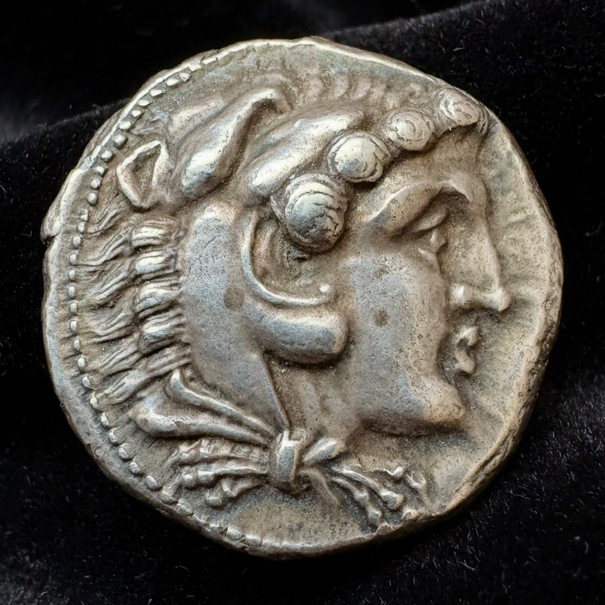

| Demetrius I Poliorcetes | |
|---|---|
| Born | 337 BC |
| Died | 283 BC, Apamea, Syria |
| King of Macedon | 294 – 288 BC |
| Dynasty | Antigonid |
| Father | Antigonus I Monophthalmus |
| Epithet | Poliorcetes, "the Besieger" |

Demetrius I (Greek: Δημήτριος; 337–283 BC), surnamed Poliorcetes ("the Besieger of Cities"), was a Macedonian nobleman, military leader and king of Macedon from 294 to 288 BC. Son of Antigonus I Monophthalmus, one of the Diadochi who fought over Alexander the Great's empire, Demetrius was among the most brilliant and flamboyant commanders of the age — a master of siege warfare whose career swung between dazzling triumphs and catastrophic reversals.
Demetrius first won fame at the Battle of Gaza in 312 BC, fighting for his father against Ptolemy of Egypt. In 307 BC he "liberated" Athens from Cassander's garrison, and the grateful Athenians showered him with divine honours. In 306 BC he destroyed Ptolemy's fleet at the naval Battle of Salamis off Cyprus, after which Antigonus and Demetrius assumed the royal title, the first of Alexander's successors to do so.
In 305–304 BC Demetrius besieged Rhodes with enormous engines, including the Helepolis, a nine-storey armoured siege tower — the campaign that earned him his surname. The siege nevertheless failed, and the Rhodians sold his abandoned equipment to fund the Colossus of Rhodes, built by Chares of Lindos. In 301 BC Demetrius and Antigonus faced a coalition of Lysimachus, Seleucus and Cassander at the Battle of Ipsus in Phrygia. Antigonus was killed, Demetrius's cavalry pursuit came too late, and the Antigonid Asian empire was lost — though Demetrius kept his fleet, Cyprus, and strongholds in Greece.
After years of manoeuvring, Demetrius seized the Macedonian throne in 294 BC, murdering Cassander's son Alexander V. He ruled six years, founding the city of Demetrias in Thessaly, but his arrogance and vast armaments alarmed his neighbours. In 288 BC a coalition of Lysimachus and Pyrrhus of Epirus invaded; Demetrius's army deserted and he fled. His attempt to reconquer Asia ended in capture by Seleucus in 285 BC. Held in comfortable captivity at Apamea in Syria, he died in 283 BC, drinking and gaming, aged about 54. His son Antigonus II Gonatas eventually secured Macedon for the Antigonid dynasty, which endured until the Roman conquest.